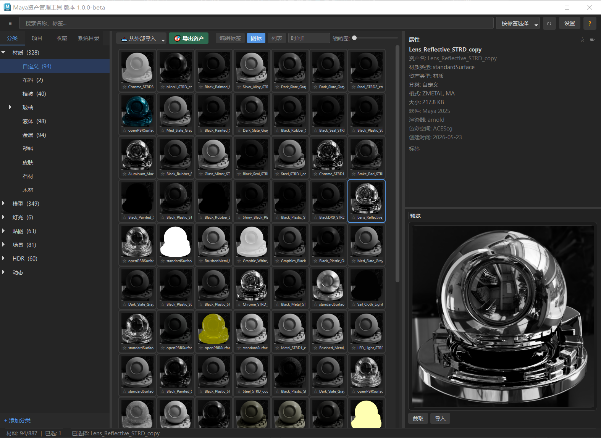

MaterialManagementPro User Guide

1. Plugin Overview
MaterialManagementPro is a material and asset management plugin for Maya 2025. The plugin folder is named squirrel_asset_manager.
Dual Library Architecture
| Tab | Purpose | Storage Location |
|---|---|---|
| Category Library | Long-term categorized asset library, organized by category | System-level directory AssetLibrary/category_library/ |
| Project Library | Assets specific to the current project, isolated per project | In-project AssetLibrary/project_library/ |
The two libraries arecompletely independent; assets cannot be dragged, dropped, or copied across libraries.
Six Sub-libraries
Each library contains 6 sub-libraries: Materials, Models, Textures, Lights, Scenes, HDR. Each sub-library can have its own customized category hierarchy.
Asset Format
All assets are stored uniformly as .zasset folders, containing metadata (meta.json), thumbnails (thumb.sicon / thumb.mp4), material data (node.zmetal), lighting data (node.zlight), geometry (node.ma/fbx/abc...), textures (textures/ directory) and optional associated files (associated/). One folder is one complete asset.
2. Export Assets
Export is the process of packaging materials, models, or objects from the Maya scene into a .zasset asset. Click the "Export Asset" button to open the export dialog (see the "?" help in the dialog for detailed format descriptions).
2.1 Three Export Modes
| Mode | Use Case | Behavior |
|---|---|---|
| Single Asset | Merge 1 or more selected objects into 1 asset | Opens a dialog → specify name/category → interactive screenshot → export. Does not automatically hide unselected objects; isolate the view manually |
| Fully Automatic | Export N selected objects, each as its own asset | Interactive framing on the first asset → automatically reuses the framing frame on subsequent ones → export all. Auto-isolates and frame-fits the model |
| Semi-automatic | Export N selected objects, each independently | Shows a screenshot UI for each asset → confirm manually → next. Auto-isolates and frame-fits the model |
2.2 Three Thumbnail Sources
| Source | Speed | Quality | Best For |
|---|---|---|---|
| Screen Capture | Fastest | Viewport screenshot | Most assets such as models and textures |
| Maya Playblast | Fast | Viewport playblast | Assets that need an animation preview |
| Render | Slowest | Arnold render | High-quality materials/scenes |
2.3 Supported Export Formats
| Category | Formats | Description |
|---|---|---|
| Geometry | ma / mb / fbx / obj / usd | Standard modeling formats. References are kept un-baked when exporting .ma/.mb |
| Cache | abc (Alembic) | Animation cache, supports timeline and keyframe ranges |
| Proxy | ass / rs / vrscene / vrmesh | Arnold / Redshift / V-Ray renderer proxy formats |
| Nodes | .zmetal / .zlight / .mcm | Material node preset + light preset + material mapping (topology matching) |
| Textures | textures/ | Checked by default; packages the material's associated textures into the asset. Uncheck to skip packaging |
2.4 Collect Associated Files
A "Collect Associated Files" section has been added at the top right of the export dialog. When checked, it automatically scans the selected objects' associated nodes and copies them to the associated/ directory:
| Category | Supported Nodes | Collected Content |
|---|---|---|
| Cache | AlembicNode / gpuCache / cacheFile / VRayVolumeGrid / aiVolume / RedshiftVolumeShape | .abc .gpu .mc .vdb volume caches |
| Proxy | aiStandIn / VRayProxy / VRayMesh / VRayScene / RedshiftProxyMesh / mayaUsdProxyShape | .ass .vrmesh .vrscene .rs .usd files |
| Reference | Maya reference nodes | .ma/.mb reference source files (only the references the selected objects belong to) |
#### format) and VRayVolumeGrid (# format) frame sequences are automatically detected and fully copied frame by frame.2.5 Timeline Animation Export
Three frame ranges: Current Frame (still frame), Timeline (playback range), Keyframes (the object's keyframe range). Timeline/keyframes apply to abc/usd/ass/rs/vrmesh. Render + timeline composites frames into an MP4 (⚠️ this may take several minutes; Maya temporarily becoming unresponsive is normal).
3. Import Assets

3.1 Import from External Files
- Toolbar "Import" → "Import from File" (or "Import from Folder")
- Select a Maya file or a texture file; a
.zassetis created automatically and added to the current category - When importing a folder, files are grouped automatically by name, each group producing one .zasset
3.2 Import from Library to Scene
Right-click an asset to open its menu:
| Menu Item | Effect |
|---|---|
| Import to Scene | Automatically imports using the most suitable format |
| Import → .zmetal | Rebuilds the complete shading network (nodes, attributes, connections, textures). The material name retains its original name |
| Import Light → Choose Renderer | Rebuilds the light node network from .zlight (including textures/IES/HDR). Supports Arnold / V-Ray / Redshift / Maya native, chosen among four |
| Import → .mcm | Imports the material and automatically matches it to the selected objects (see 3.3) |
| Import → .ma/.fbx/.obj/... | Imports geometry in the specified format |
| Import → .ass/.rs/.vrscene/.vrmesh | Creates a renderer proxy reference node |
| Import Geometry | (For assets with variants) Imports geometry by LOD level/version |
| 🔍 Preview Nodes | Previews the .zmetal or .ma node content in the scene |
3.3 MCM Material Matching
.mcm records an object's topology features (vertex count, face count, edge count). On import, it matches precisely by these 3D features and assigns the material automatically.
- First import the .zmetal (rebuilds the material network)
- Compute the selected object's vertex/face/edge counts
- Find the original object matching the 3D features exactly in the .mcm
- Assign the material to the selected object automatically (including face-level assignment)
3.4 Asset Management Operations
- Copy/Paste: Paste across categories. Must be done through the plugin menu
- Rename: Modify the name in the right-side property panel, then press Enter. Do not rename the .zasset folder directly
- Delete: Requires a second confirmation
- Export .zasset: Copies it to a specified folder for cross-library migration or backup
- Update Asset: After modifying the model, right-click "Update Asset" to append an LOD, create a new version, or fully replace
- 🧠 AI Analyze Thumbnail: Right-click → AI Analyze Thumbnail, automatically identifies asset type/name/category/tags
4. AI Analysis
Based on the local Ollama vision model (qwen3-vl:8b), it intelligently analyzes asset thumbnails and automatically generates:
- Readable name — a friendly display name for the asset
- Suggested category — recommended sub-category based on image content
- Tags — keyword tags such as material/color/usage
- Notes — a short description
- Select an asset → Toolbar "🤖 AI Tools" → choose model/language/review options → start analysis
- Or right-click the asset thumbnail → "🧠 AI Analyze Thumbnail"
- When analysis finishes, a results window pops up where you can edit and review
- Check "Move to the analyzed category" (checked by default): on apply, the asset is automatically moved to the AI-suggested category directory
- Click "Apply" to write the metadata/move the asset
ollama pull qwen3-vl:8b. Chinese and English analysis are both supported.5. FAQ
❌ Manually copying a .zasset folder
Copied assets do not show up in the plugin. Correct: Right-click → Copy → Paste.
❌ Renaming .zasset directly
The asset disappears. Correct: Change the name in the property panel and press Enter.
❌ Deleting the plugin folder
Assets under the category all disappear. Correct: Delete them one by one inside the plugin.
❌ Dragging across libraries
Category and Project are independent. Correct: Export the .zasset → import it into the target library.
❌ Maya freezes after Timeline + Render
This is the normal rendering process; wait for it to finish. If you are in a hurry, choose playblast.
❌ Importing abc/obj with no material
Select the object → right-click → Import → .mcm (the asset must contain a .mcm).
❌ MCM matching fails
The vertex/face/edge counts do not match the original model (perhaps it has been triangulated or had points merged). Ensure the topology is completely identical.
❌ Wrong texture path after import
Re-export the asset (textures are automatically redirected to the project's sourceimages directory).
❌ The exported .ma file is huge
This is normal. Referenced objects keep their reference relationship on export (preserveReferences) and are not baked into the file. To bake the referenced content, import the reference in Maya first (File → Import Reference).
❌ "Collect Associated Files" collected no proxies
Make sure the object is actually connected to cache/proxy nodes. V-Ray requires the corresponding VRayMesh/VRayScene nodes, Redshift requires RedshiftProxyMesh, and USD requires mayaUsdProxyShape.